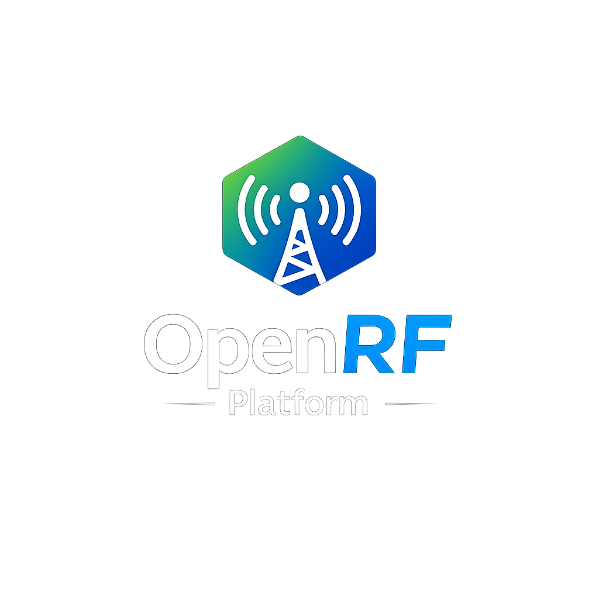

ESP8266 FinalCC1101433 / 868 MHzMQTTHome Assistant
Open Source RF Gateway & Automation Platform.
Build a complete ESP8266 + CC1101 RF gateway with native protocol support, RAW transmission, RF analysis, MQTT, Home Assistant Discovery and a modern local web interface.
ESP8266 feature complete · Open source · Built for practical RF automation

OpenRF Platform v1.2.0 Final
The ESP8266 platform is complete.
OpenRF Platform v1.2.0 is the final feature release for the original ESP8266 + CC1101 architecture. What began as a simple RF gateway has evolved into a complete open-source platform for receiving, analysing, learning and transmitting RF signals.
The ESP8266 implementation is now considered feature complete. Future releases for this platform will focus only on critical bug fixes if required.
Feature highlights
A complete RF toolkit in one platform.
Designed for local operation, practical automation and direct Home Assistant integration.
Stable RF Gateway
Reliable ESP8266 + CC1101 reception and transmission for everyday automation.
RF Analyzer v2
Inspect received frames, timing data, RSSI and rejection reasons directly in the WebUI.
Native Protocol Framework
Structured protocol support with room for continued expansion and community contributions.
NVKP01 Kinetic
Native recognition, learning and RX Slot support for the NVKP01 kinetic remote.
RAW Learn & Replay
Capture unknown RF signals, store them in slots and replay them when needed.
Universal RX Slots
Turn recognised RF events into reusable MQTT and Home Assistant entities.
MQTT & Home Assistant
Automatic Discovery, local topics and direct integration into automations.
OTA, Backup & Restore
Update the firmware and protect the complete device configuration without dismantling the hardware.
433 / 868 MHz Selection
Select the operating band in Settings when using the matching CC1101 module and antenna.
Developer Analyzer Mode
An exclusive high-detail analysis mode built specifically for the limits of the ESP8266 generation.
Looking ahead
OpenRF Platform ESP32 v2
Development now moves to a native ESP32 architecture. The objective is not simply to port the existing firmware, but to build a substantially more capable RF automation platform without the memory limitations of the ESP8266.
Dual-radio architecture
Dedicated 433 MHz and 868 MHz radios operating within the same OpenRF node.
More memory and performance
Larger protocol capacity, expanded Learn and Analyzer functions, and improved multitasking.
Long-range node communication
Direct OpenRF-to-OpenRF communication over long distances without depending on Wi-Fi.
LoRa
Distributed RF automation beyond Wi-Fi.
The concept connects local physical inputs, long-range LoRa links, RF transmitters, relay outputs and Home Assistant within one platform.
InputPhysical button
→
OpenRFNode A
LoRa
OpenRFNode B
→
OutputRelay control
InputRF or physical button
→
OpenRFNode A
LoRa
OpenRFNode B
→
Output433 / 868 MHz RF
Community Hub
Open Community Hub →
Share projects and help shape the platform.
Ask
Get help with installation and RF analysis
Discuss hardware, firmware, protocols and Home Assistant integration.
Share
Show what you built with OpenRF
Document real installations, automations and creative RF solutions.
Contribute
Suggest protocols and future capabilities
Feedback from real users directly influences the ESP32 generation.
Documentation
From wiring to advanced RF workflows.
0102
03
04
Installation & Wiring
Complete ESP8266 NodeMCU V2 + CC1101 wiring diagram and installation steps.
Getting Started
First boot, AP mode, Wi-Fi, MQTT and Home Assistant configuration.
RF Learn & Analyzer
Capture, inspect, store and replay native or unknown RF signals.
Home Assistant
MQTT Discovery, RX Slots and practical automation examples.
The ESP8266 release series established the foundation. The ESP32 generation will build upon it.
Open source. Community-driven. Built for practical RF automation.GitHub
Open source, open development.
Browse the source code, follow releases, report technical issues or contribute to the next generation of OpenRF Platform.